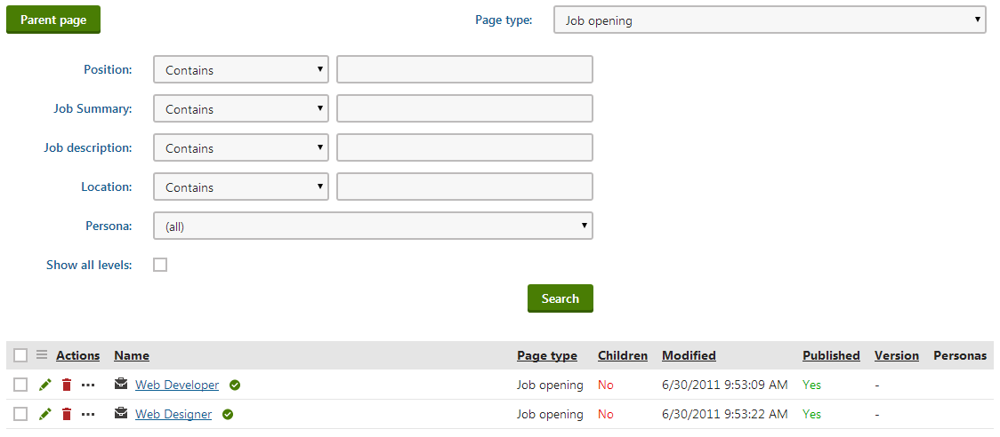
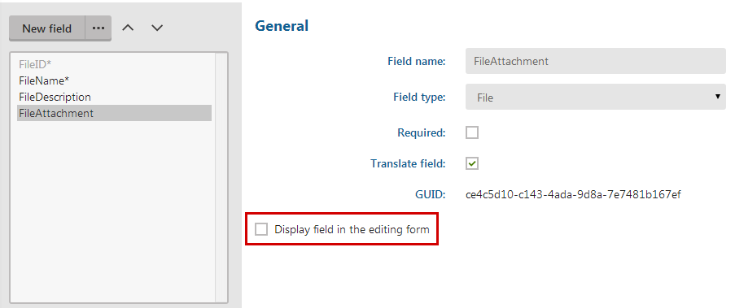
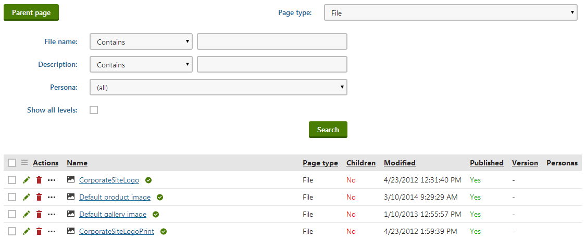

Extending the page type listing filter
To extend the possibilities of listing a certain page type, you can customize the filter that is used in the Listing mode . Editors use the page listing filter to perform multiple page (batch) operations in the Pages application and on Live site.
To extend the page type listing filter, create an alternative form in which you specify the fields that are then available in the filter.

Page listing filter extended by a Location field
Creating an alternative form to extend the page type listing filter
The following example shows how you can create an alternative form that extends an existing page type by a Location field.
Open the Page types application.
Edit (
 ) the page type for which you want to customize the filter.
) the page type for which you want to customize the filter.Switch to the Alternative forms tab.
Create new form.
Fill in the details as follows:
Display name - Filter
Code name - Filter
The alternative form needs to have Filter as its Code name to work as a filter in page listing.
Save the alternative form.
The alternative form inherits all the fields from the parent (original) form by default.You can either:
Add new fields that you want to display in the page listing filter.
— or —Deactivate the fields that you don't want to use in the page listing filter.
To deactivate the fields:Switch to the Fields tab.
For each field that you don't want to use in the page listing form filter, turn the Display field in the editing form field off and Save the changes.

Disabling a field in an alternative form
Now, whenever a user lists the page type for which you created the Filter alternative form, the system displays the customized filter.

Page listing filter with a disabled field
Note that custom layout isn't applied in the alternative forms that are used to extend the page type listing filter.